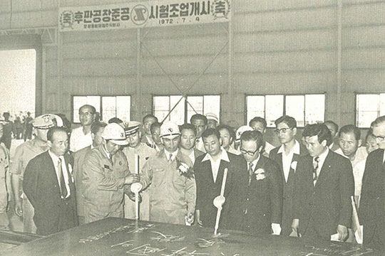
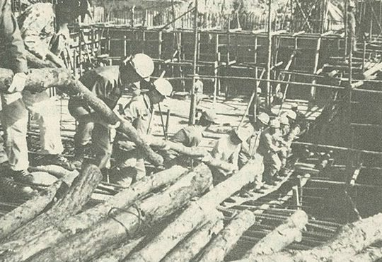
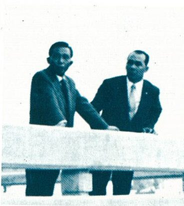

보도일 2015-02-16출처 조선일보 프리미엄조선 연재
“정말 믿어도 되는 거야?”
식민지배상금으로 세운 용광로, 그 국가재건과 민족중흥의 불꽃을 끝까지 짊어지겠다고 박정희 앞에서 다짐했던 박태준이 그의 전화를 받았다. 1974년 1월 중순이었다.
“지금 포철 보고서를 보고 있어.”
“네.”
포스코가 경제기획원과 재무부에 제출한 ‘1973년도 연차보고서’가 대통령 책상 위에 올라가 있는 모양이었다.
“순이익을 표시하는 난에 제로가 너무 많이 들어간 것 같아. 1200달러겠지. 어떻게 가동한 지 6개월밖에 안 되는 종합제철 공장에서 1200만 달러의 이익을 낼 수 있겠나? 제로 4개가 더 붙은 거 아닌가? 정말 믿어도 되는 거야?”
대통령이 밝은 목소리로 포철 사장을 놀리려 했다. 하지만 박태준은 이미 한 차례 겪은 일이었다. 부총리도 그랬던 것이다. 세계 종합제철소 역사상 신설 제철소가 가동 첫해부터 흑자를 낸 유례가 없으니 모두가 당연히 적자를 낼 것이라고 예상했던 것이다.
“주주총회에 보고하려고 7명이 넘는 공인회계사가 몇 주일에 걸쳐 면밀하게 만든 재무제표입니다. 그들은 참빗으로 머리를 빗듯이 모든 사항을 일일이 검토했습니다. 허위기재나 오류는 한 점도 없습니다.”
“내가 임자의 성품을 몰라서 이러겠나? 기쁘고 놀라서 이러는 거야. 임자가 기어이 기적을 일궈냈어.”

박정희가 ‘기적’이란 말을 선물했다. 정상조업을 시작하여 여섯 달 만에 1200만 달러(약 46억 원) 순이익을 올린 사실은 포스코와 한국정부의 단순한 기쁨에만 머무는 게 아니었다. 2기, 3기, 4기에 이어 제2제철소까지 건설해나갈 ‘포스코과 박태준’의 국제적 신인도를 급등시켰고, 그것은 앞으로 외국 투자유치를 끌어올 강력한 자석이었다.
박태준의 포스코가 조업 원년의 정상조업 6개월 만에 모든 이들의 예상을 보기 좋게 깨부수고 1200만 달러의 통쾌한 흑자를 올릴 수 있었던 결정적 이유의 하나는 건설 순서를 ‘후방방식’으로 결정한 그의 전략적 선택, 그리고 그것이 헛되지 않게 제때 오스트리아 푀스트 알피네를 설득하여 ‘중후판공장’을 완공한 것이었다. 1971년 9월 ‘열연비상’을 걸어서 3개월이나 지연된 공기를 두 달 만에 5개월치 일을 해서 완전히 만회한 사실도 빼놓을 수 없다.
포스코는 중후판공장을 1972년 7월 4일 완공한 데 이어 그해 10월 3일에는 열연공장도 완공했다.
열연공장은 중후판공장보다 훨씬 더 규모가 컸다. 중후판공장이 슬래브를 처리하여 연간 22만6000톤의 제품을 생산하는 규모인데, 열연공장은 슬래브를 처리하여 연간 58만3000톤의 제품(열연코일, 박판 등)을 생산하는 규모였다. 슬래브를 싣고 호주의 포트 켐블라를 출항한 선박이 포항 앞바다에 등장한 때는 8월 하순이었다.
중후판공장에서 생산한 후판제품이 7월 31일 처녀 출하를 한 상태에서 10월 3일 열연공장이 시험조업에 들어갔으니 박태준의 ‘후방방식’이 완성된 것이나 진배없어서 ‘포스코에 수익이 들어오는 구조’가 갖춰진 것이었다.
만약 박태준이 철강제품의 중간소재인 슬래브를 수입해 와서 후판제품부터 생산해야겠다는 결단을 내리지 못했더라면, 설령 그 결단을 내렸더라도 만약 푀스트 알피네를 제때 제대로 설득하지 못하여 유대인 거간꾼 아이젠버그가 장난치는 대로 ‘조일제철’이란 유령 같은 회사에다 중후판 생산을 그냥 맡기게 되었더라면, 만약 열연비상을 걸어서 지연된 공기를 거뜬히 만회하고 더 나아가 당초 계획보다 공기를 단축하여 열연공장을 제대로 완공하지 못했더라면, 포스코의 ‘일관제철소 조업 원년 흑자기록’은 세워지지 않았을 것이며 박정희가 감격한 목소리로 ‘기적’이란 단어를 쓰도 못했을 것이다.

1974년 1월 영일만 모래사장에는 기적의 뿌리들이 강철파일처럼 깊숙이 박혀 있었다. 굵은 것만 추려도 8가지였다.
1) 최저비용의 최고설비 구매
2) 공기단축
3) 정상조업 조기 달성
4) 안정적 원료구매
5) 기술인력 조기육성
6) 단계별 적정 사원 확보
7) 복지정책 조기 정착
8) 위 일곱 가지를 다 합친 것만큼 중요한, 제철보국과 우향우로 뭉친 불굴의 도전의지
여기서 반드시 기억해야 할 것이 하나 더 있다. 8가지의 튼튼한 뿌리들을 다 합친 것만큼 주목해야 할 무형의 성공요인이 하나 더 있다. 그 뿌리들에 부단히 영양을 공급하는 최고경영자의 탁월한 리더십, 이 리더십을 확실히 감싸주는 튼튼한 보호막이 바로 그것이다. 미국 스탠포드대학교 경영대학원이 다음과 같이 명쾌히 분석했다.
<포항제철은 박정희 대통령의 강력한 의지와 박태준의 탁월한 리더십을 바탕으로 성공할 수 있었다.>
그런데 박정희가 박태준에게 기적을 일궈냈다고 자랑스러워한 포철의 성공 과정에는 박정희가 활용한 유대인 거상(巨商) 아이젠버그와 박태준이 결투를 벌이는 일도 발생했다. KISA가 한국 정부를 골탕 먹이던 시절부터 아이젠버그를 매우 못마땅하게 여겨온 박태준이 이제 철(鐵)의 손으로 어떻게 다룰 것인가?
